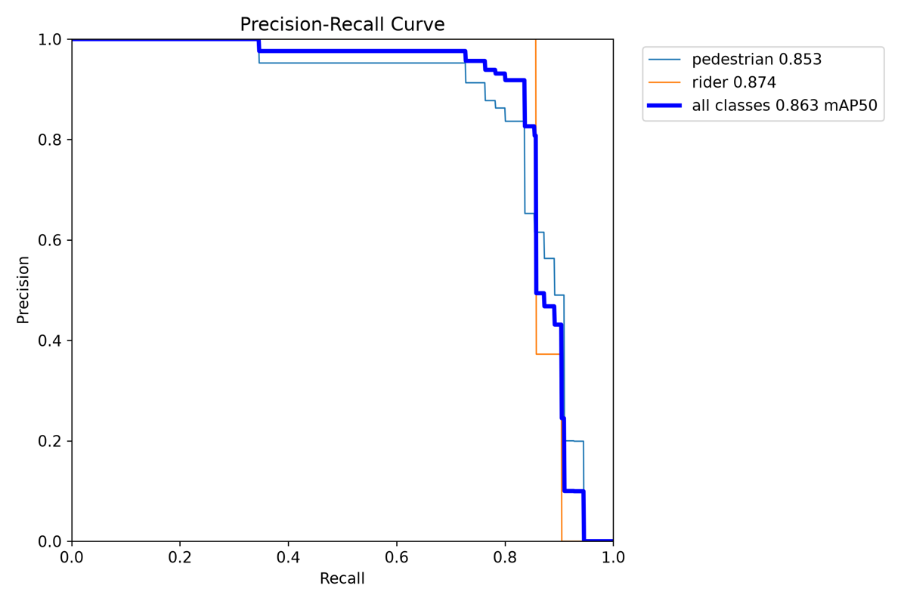

PIF6004 · été 2024Summer 2024
Détection de piétons pour les ADASPedestrian detection for ADAS
Trois approches comparées (EfficientNetB0, U-Net, YOLOv8) et un jeu de données annoté avec CVAT. En 2026, une version 2 affinée à partir de poids COCO, évaluée sur un test séparé avec intervalles de confiance par bootstrap.
Three approaches compared (EfficientNetB0, U-Net, YOLOv8) and a dataset annotated with CVAT. In 2026, a version 2 fine-tuned from COCO weights, evaluated on a held-out test set with bootstrap confidence intervals.
v2 : mAP@0,5 = 0,86 sur test séparé (v1 : 0,55)v2: mAP@0.5 = 0.86 on held-out test (v1: 0.55)
YOLOv8Transfer learningBootstrapONNXTensorFlowFlask
▶ Essayer la démo en ligne▶ Try the live demo
Voir le dépôt →View repository →